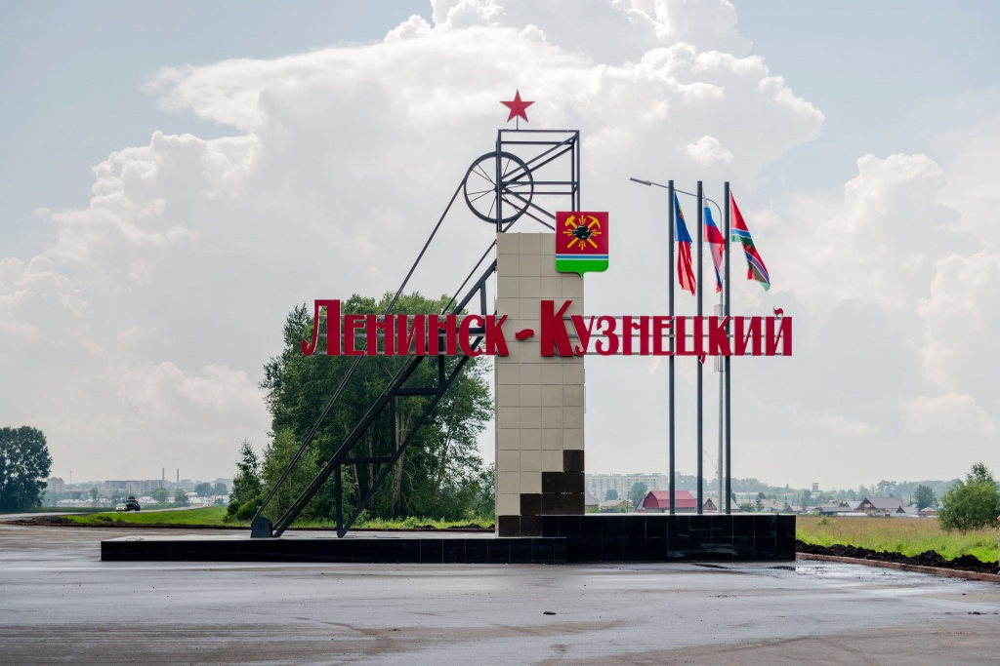
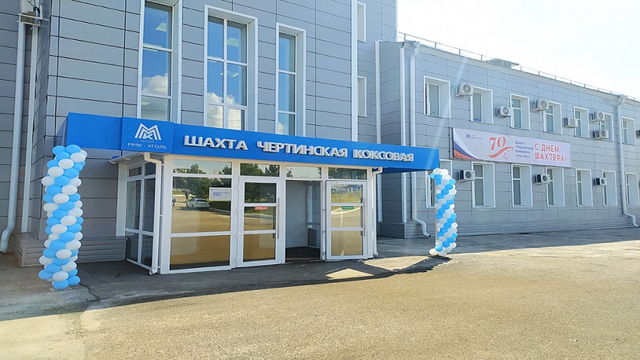

О компании
История
1991
«Белон» создано в Новосибирске в мае 1991 года. Первые важнейшие задачи компании: реконструкция угледобывающих и углеперерабатывающих предприятий Кузбасса, формирование новых технологических цепочек, установление актуальных производственных связей, отвечающих требованиям новой экономики. Совместно с объединением «Беловоуголь» осуществлена поставка первых 25 тыс. тонн энергетического угля в Турцию. «Белон» совместно с новосибирскими предприятиями военно-промышленного комплекса реализовал первый крупный проект - восстановление обогатительной фабрики "Чертинская". Фабрика была модернизирована за 6 месяцев. «Белон» вышел на Российскую, Московскую и Одесскую товарно-сырьевые биржи.
1992
1992 Год формирования угольного бизнеса компании. Поставки энергетического угля на Запорожскую и Криворожскую ГРЭС, угольного концентрата - на Новолипецкий металлургический комбинат. «Белон» увеличивает масштабы работ в области реконструкции угольных предприятий, наращивает объемы поставок энергетического угля и угольного концентрата. Основными поставщиками угольного концентрата становятся ЦОФ «Беловская» и ГОФ «Чертинская». В число поставщиков входят предприятия производственного объединения «Ленинскуголь», компания начинает работы по восстановлению этих предприятий. Появляется новое направление деятельности компании «Белон» – реализациия металлопроката. За год поставлено 27,7 тыс. тонн металлопродукции. Открыт первый филиал «Белона» в городе Ленинск-Кузнецкий.
1993-1994 год
Формируются технологические программы «Уголь» и «Металл». Энергетические угли поставляются в Грузию, Казахстан, Азербайджан. В Москве и Липецке открываются филиалы «Белона». В 1994 г. появляются новые поставщики угля и угольного концентрата – предприятия угольной компании «Прокопьевскуголь». Укрепляются отношения с предприятиями Беловского и Ленинск-Кузнецкого угольных бассейнов. Компании удалось в сложной экономической ситуации привлечь металлургические и машиностроительные предприятия к комплексному обновлению угольных производств, тем самым обеспечив устойчивое взаимодействие между отраслями промышленности. Компания начинает экспорт металлопродукции. "Белон" становится официальным представителем Новолипецкого металлургического комбината.
1995 год
Объем поставок угля и угольного концентрата составил 1 млн 700 тыс. тонн. Более чем в два раза вырос объем продаж металла. Расширилась география экспорта металла - он идет в США, ЮАР, Австралию, Турцию и Южную Корею.
1997 год
Принято стратегическое решение о приобретении акций ряда угольных предприятий. К работе по экспорту угля приступило открытое в Кемерове представительство «Белона». Подписаны контракты на поставку угля в Турцию, Румынию, Польшу. Компания начинает прирастать производственными активами.
1998-1999 год
Начинается формирование Группы «Белон». В состав компании входит ЦОФ "Беловская". Согласно инвестиционной программе начата реконструкция этой фабрики, направленная на модернизацию оборудования и вывод предприятия из кризиса. Компания KPMG впервые проводит аудит финансовой отчетности ОАО «Белон» по МСФО.
2000-2001 год
В состав компании входит железнодорожное предприятие "Беловопогрузтранс". «Белон» становится трейдером Западно-Сибирского металлургического комбината по Кузбассу и Новосибирской области. В 2001 году «Белон» становится членом некоммерческого партнерства «Русская сталь»
2002 год
В состав Группы "Белон" входят шахта "Инская" ("Листвяжная"), обогатительная фабрика "Чертинская", автобаза "Инская", склад ГСМ. Завершается второй этап реконструкции ЦОФ «Беловская» и ее комплексная модернизация. Это позволило значительно увеличить производственные показатели фабрики. Создано ПО «Сибирь-Уголь», в которое вошли производственные предприятия, составляющие полную технологическую цепочку: добыча, переработка, отгрузка и отправка потребителям угля и угольного концентрата.
2003 год
Компания приступила к стратегическому планированию, разработала и приняла основополагающий документ перспективного развития -- базовую концепцию развития, определившую миссию Группы «Белон» и приоритетные для нее бизнес-направления. В состав Группы "Белон" входят шахты "Чертинская-Коксовая" и "Костромовская" , открыт завод по производству алюмосиликатной микросферы. На ЦОФ «Беловская» осуществлен запуск первой в России уникальной установки по переработке шламов. Это позволило вторично обогащать отходы производства угольного концентрата.
2004 год
В Группе появляется строительное направление - производство кирпича и щебня. В Группу "Белон" вошел Ленинск-Кузнецкий завод строительных материалов. Компания выигрывает аукцион на геологическое изучение, разведку и пользование недрами участков "Новобачатский" и "Новобачатский-2" Краснобродского месторождения. С администрацией Кемеровской области подписано соглашение о социально-экономическом сотрудничестве.
2005 год
Шахта "Чертинская-Коксовая" впервые за 12 лет вышла на миллионный уровень добычи угля. Это стало возможным благодаря значительным инвестициям, направленным на техническую модернизацию и повышение производственной безопасности.
2006 - 2007 год
Компания первой в угольной отрасли провела IPO, разместив часть своих акций среди российских и зарубежных инвесторов. В состав Группы «Белон» вошла шахта "Новая-2" ( ныне шахта «Чертинская-Южная»).
Группа «Белон» завершила строительство обогатительной фабрики "Листвяжная". Для России это уникальное по мощности предприятие, которое перерабатывает угли марки «Д» в высококалорийный концентрат. Утвержден новый План стратегического развития Группы «Белон» до 2012 года. Для его выполнения компания детализировала приоритетные цели по различным направлениям деятельности и определила первоочередные стратегические инициативы по их реализации.
2008 год
Создан стратегический альянс с ММК, что дает «Белону» важные конкурентные преимущества. В частности, перспективу стабильного долгосрочного сбыта угольного концентрата. А также придает серьезный стимул развитию всего направления по добыче и переработке углей, что позволит в перспективе вывести на новый уровень объемы реализации в рамках металлотрейдингового бизнеса. За 2008 год компания сделала рекордные инвестиции в развитие производственного потенциала своих предприятий в Кузбассе – 5 млрд 171 млн рублей. Введены в эксплуатацию разрез «Новобачатский», завершена полная реконструкция железнодорожной станции «Иня». Запущена в эксплуатацию построенная по новейшим современным технологиям шахта «Костромовская». В конце года Группа «Белон» была включена в правительственный список стратегически важных предприятий России.
2009 год
В 2009 году в развитие производства компанией было вложено 1,3 млрд. рублей. В том числе 526 млн. руб. было выделено на техническое перевооружение шахт и фабрик. Еще 589 млн. руб. - на строительство производственных объектов (железнодорожной станции «Костромовская», объектов на шахтах и разрезе «Новобачатский»). В октябре 2009 года у компании сменился собственник, которым стало ОАО «Магнитогорский металлургический комбинат».
2010 год
Заключено Федеральное Отраслевое Соглашение (ФОС) на 3 года. 26 января 2010 года состоялось внеочередное общее Собрания акционеров ОАО «Белон», на котором были досрочно прекращены полномочия прежнего генерального директора А.П. Доброва, избран новый генеральный директор ОАО «Белон» В.В. Бахметьев и новый состав Совета директоров компании, а также внесены изменения в Устав ОАО «Белон». В частности, принято решение об изменении местонахождения ОАО «Белон» - компания переведена в Кемеровскую область, в г.Белово. Основными задачами нового Генерального директора ОАО «Белон» и нового состава Совета директоров являются: выполнение плана производственных показателей работы предприятий Группы, выработка новой стратегии развития компании как предприятия, вошедшего в Группу предприятий ОАО «Магнитогорский металлургический комбинат». 23 апреля состоялось годовое общее собрание акционеров ОАО «Белон». Акционеры утвердили годовой отчет, бухгалтерский баланс, утвердили устав общества в новой редакции, избрали совет директоров в прежнем составе и ревизионную комиссию.
2011 год
Компания «Белон» сосредоточила свою деятельность на добыче и переработке углей коксующихся марок. Основные инвестиции направлены на модернизацию существующего производства и реализацию новых проектов. Приобретается высокопроизводительное проходческое оборудование на основное угледобывающее предприятие компании - шахту «Костромовская», начинается строительство склада рядовых углей на ЦОФ «Беловская», наклонного ствола на шахте «Чертинская-Коксовая». На реализацию социальных программ направлено порядка 160 млн. рублей. Происходят изменения в управлении компании – с 1 февраля 2011 года обязанности генерального директора ОАО «Белон» исполняет Вячеслав Алексеевич Бобылев. Прежний руководитель Виталий Викторович Бахметьев, стоявший у руля компании с октября 2009 года, назначен вице-президентом по коммерции ООО «Управляющая компания ММК». 26 мая В.А. Бобылев был избран Советом директоров на должность генерального директора.
2012 год
2012 год стал рекордным по подготовке очистного фронта. Впервые за всю историю «Белона» проходческие бригады трех шахт компании: «Чертинской-Коксовой», «Чертинской-Южной» и «Костромовской», прошли 24 566 погонных метров горных выработок. «Белон» стал пионером среди угольных компаний Кузбасса в освоении новой технологии добычи угля с круто-наклонных пластов с углом наклона до 45 градусов. Создание безопасных условий труда – одно из приоритетных направлений деятельности компании. На эти цели в 2012 году было направлено 708,4 млн. рублей. Созидательную позицию в ведении бизнеса «Белон» проявил в социальной политике. Компания поддерживает все инициативы губернатора Кемеровской области Амана Тулеева. Участвует в благотворительных проектах территорий, на которых расположены ее производственные объекты. На реализацию социальных программ области и муниципальных образований в 2012 году было выделено 57,3 млн. рублей. Финансирование социальных программ для работников и пенсионеров компании составило 172,8 млн. рублей. Компания «Белон» с уважением относится к ветеранам, к их опыту и жизненной мудрости. Ветеранская организация ОАО «Белон» активно участвует в жизни компании, ведет профориентационную работу в учебных учреждениях. В компании стремятся создать все условия молодым кадрам для активного старта в карьере и в профессиональном росте. В свою очередь совет молодежи «Белона» является инициатором различных акций, большинство из которых имеет благотворительное направление. В 2012 году отметила свой 60-летний юбилей шахта «Чертинская-Коксовая». Другую дату, значимую для угольщиков всей страны, отмечали на шахте «Чертинская-Южная». Исполнилось 50 лет со дня установления в 1962 году мирового рекорда месячной добычи угля бригадой Н.Г. Малютина.
2013 год
2013 стал годом технического перевооружения и внедрения новых технологий. Шахта «Чертинская-Коксовая стала первой в Кузбассе, где применили механизированный способ отработки круто-наклонного пласта, внедрив новую технологию. Специально для шахты на Ченьчжоуском машиностроительном заводе (Китай) было изготовлено оборудование, с помощью которого горняки вели механизированную добычу угля с пласта, угол наклона которого превышал 40 градусов. Продолжилась планомерная замена проходческой техники на шахтах «Чертинская-Коксовая» и «Костромовская». На шахте «Чертинская-Южная» введена в эксплуатацию новая конвейерная линия, благодаря которой значительно сократились время и путь доставки угля из забоя на-гора. На шахте «Костромовская» был введен в эксплуатацию станок направленного бурения VLD1000 австралийской машиностроительной компании Valley Longwall Drilling Systems International Pty, который позволил расширить спектр дегазационных работ. Приобретение этого оборудования позволило Белону войти в число немногих угольных компаний Кузбасса, применяющих новейшие технологии для дегазации угольных пластов. В 2013 году «Белон» внес значительный вклад в благоустройство и социальную сферу города Белово. Компания направила средства на ремонт жизненно важных объектов: дворов трех жилых домов, спорткомплекса, ДК «Угольщиков» (Новый Городок) и стадиона «Шахтер» (Бабанаково). Была поддержан все кузбасская акция высадки деревьев, объявленная губернатором Кемеровской области. Молодежью компании развернута активная работа по сбору средств на лечение детей, помощь детским социальным учреждениям. Губернатор Кемеровской области А.Г. Тулеев в правительственной телеграмме поблагодарил руководство «Белона» за помощь в приобретении жилья для детей-сирот Кузбасса – в феврале «Белоном» на эти цели было направлено 3,6 млн рублей. Губернатор оценил понимание и поддержку угольной компании, отметив, что благотворительная помощь «Белона» ляжет в копилку добрых дел во имя кузбасских детей. Пятеро руководителей предприятий компании «Белон» избраны в Совет народных депутатов Беловского городского округа.
2014 год
2014 год открыл для ЗАО «Шахта «КОСТРОМОВСКАЯ» новые горизонты – в эксплуатацию была введена первая лава в восточном крыле шахтного поля, запасы которого насчитывают более 16 млн тонн угля. Отработка этого участка – это перспектива стабильной работы шахты на несколько лет вперед, поэтому на предприятии было продолжено техническое перевооружение очистных и проходческих работ. Значительный вклад компания внесла в реализацию социальных программ Беловского городского округа, профинансировав капитальные ремонты и реконструкцию социально значимых объектов, среди которых дворовые территории города, спорткомплекс на территории школы-интерната №1, ДК Угольщиков, стадион «Шахтер». Кроме того, на средства Белона были отремонтированы водопровод в Новобачатском сельском поселении, а также ряд социальных объектов в Ленинск-Кузнецком районе Кемеровской области. Во время проведения Всекузбасского Дня посадки деревьев представители компании озеленили в городе Белово улицу Кузбасскую. На подписании соглашения о социально-экономическом сотрудничестве заместитель губернатора Максим Макин отметил, что «Белон» в полной мере выполнил все обязательства по заключенному в 2013 году Соглашению. Инвестиции в развитие собственного производства ОАО «Белон» в 2013 г. составили 2,4 млрд руб., что выше показателей 2012 г. на 206 млн руб. Большая часть из этих средств была использована на техническое переоснащение и развитие угледобывающих предприятий компании . Одно из приоритетных направлений деятельности ОАО «Белон» - создание безопасных условий труда. Финансирование проектов и мероприятий в этой области в 2013 году составило 877,1 млн рублей. Это на 168,7 млн рублей больше, чем в 2012 году.
2015 год
В компании были проведены мероприятия по повышению эффективности работы предприятий. В единый комплекс были объединены четыре предприятия компании: «Белон-геология», «Сибгормонтаж», автобаза «Инская» и «Беловопогрузтранс», что позволило снизить затраты на их содержание и оптимизировать процессы управления. На шахте «Чертинская-Коксовая» окончена проходка наклонного ствола, работа по транспортировке угля на котором планируется в 2017 г. Отказ от скипового способа подъема угля в будущем позволит увеличить объемы добычи угля и значительно снизить его себестоимость. На ЦОФ «Беловская» были успешно проведены эксперименты по усовершенствованию технологии обогащения угля, результатом внедрения которой станет выпуск концентрата с лучшими показателями, более востребованного у потребителя. На автобазу «Инская» были приобретены новые автомобили немецкого производства. Досрочно выполнили план горняки шахты «Костромовская». В октябре о выполнении годового задания рапортовали проходческие, а в ноябре очистная бригады. Компания приняла участие в финансировании строительства парка «Победа» в третьем микрорайоне города Белово. Оказала помощь в работах по отсыпке дорог в частном секторе и уборке снега в городе.
2017 год
Добыча за 2017 год составила 3,6 млн. тонн угля, выпуск готового концентрата 2,7 млн. тонн. Компания «ММК-УГОЛЬ» сегодня работает стабильно и прибыльно, и каждое предприятие нашей компании внесло существенный вклад в достижение предприятия.На шахте «Чертинская-Коксовая» прошла масштабная реконструкции, которая дала ей вторую жизнь. Запуск НКС, и второй лавы 449, это открывает перед нами новые возможности по увеличению уровня добычи – до 2 миллионов тонн угля в год! У нас имеется огромная перспектива на будущее в работе шахты «Костромовская», наряду с ведением горных работ и добычей угля ведется реконструкция шахты: это строительство фланговых наклонных стволов, работы по подготовке лавы 19-11, благодаря этому в следующем году добыча угля на шахте должна возрасти до 2,7 млн. тонн угля в год.Окончательно налажен процесс по выпуску моноконцентрата марки «Ж» на Центральной обогатительной фабрике. Цех сервиса и логистики в полном объеме обеспечивает потребность нашего предприятия по транспорту и сервисным услугам.
↑